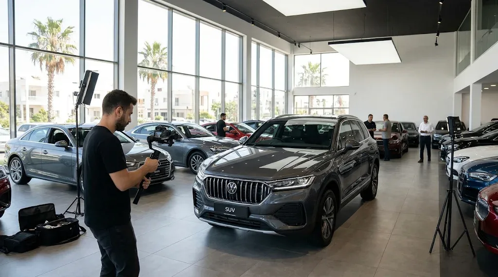

https://adavira.com/blog/kktc-ve-girne-deki-oto-galeriler-icin-arac-satislarini-hizlandiran-dijital-vitrin-rehberi · 2026-11-17T11:02:32+00:00
Kuzey Kıbrıs’ta araç alıcıları artık galeriye gelmeden önce internette araştırma yapıyor. Stoktaki araçlarınızı hızla satacak web sitesi ve çekim rehberi.

Kuzey Kıbrıs’ta ikinci el ve sıfır kilometre araç piyasası yılın her dönemi hareketlidir. Ancak Girne, Lefkoşa ve Gazimağusa genelinde galeri sayısının artmasıyla birlikte, sadece cadde üzerinde büyük bir showrooma sahip olmak veya klasik ilan sitelerine fotoğraf yüklemek artık tek başına yeterli gelmiyor.
Bugün Kıbrıs’ta araç almak isteyen hem yerel halk hem de adaya yeni yerleşen yabancı alıcılar, galeriye adım atmadan önce işletmenin internetteki izini sürüyor. Kendi kurumsal sitesi olmayan, sosyal medyasında güncel stok bilgisi paylaşmayan veya araçlarını özensiz telefon fotoğraflarıyla sergileyen galeriler, potansiyel alıcıları daha ilk dakikada rakiplerine kaptırıyor.
İlan portalları alıcıya ulaşmak için önemli bir kanaldır; ancak orada onlarca rakibinizle aynı sayfada, sadece fiyat odaklı bir rekabete girersiniz. Oysa markanıza özel hazırlanan bir Girne oto galeri web sitesi, alıcıyı doğrudan sizin showroomunuza davet eder ve kurumsal güven inşa eder.
İyi kurgulanmış bir KKTC araç stok yazılımı ve ilan sitesi şu özellikleriyle satış ekibinizin işini doğrudan kolaylaştırır:
Yüksek bütçeli bir aracı alacak müşteri, kaporta detaylarını, iç döşeme temizliğini ve aracın yoldaki duruşunu net görmek ister. Güneş ışığı altında parlayan, açısı bozuk veya karanlık showroom içinde çekilmiş fotoğraflar aracın gerçek değerini düşürür.
Profesyonel Kıbrıs araç çekimi ve drone videosu prodüksiyonu ile stoktaki araçlarınızı bir üst segmente taşıyabilirsiniz. Dış mekânda hareketli takip (rolling) çekimleri, iç mekân 4K detay videoları ve Instagram Reels / YouTube Shorts formatına uygun 30 saniyelik dinamik kurgular, ilanı gören kişinin "Bu aracı mutlaka gidip görmeliyim" demesini sağlar.
Bölgesel aramalarda görünür olmak, oto galeriler için en yüksek geri dönüşlü yatırımdır. Telefonuna "Girne ikinci el araba", "KKTC lüks oto galeri" veya "Girne kiralık ve satılık araç" yazan bir kullanıcıya hem Google Haritalar’da hem de arama sonuçlarında ilk sırada görünmeniz gerekir.
AdaVira olarak oto galeriler için; yüksek hızlı web tasarım ve yazılım altyapısından, araçlarınızın kalitesini ortaya çıkaran video ve drone prodüksiyon çekimlerine, bölgenizdeki alıcıları yakalayan SEO ve yerel arama optimizasyonundan doğrudan form ve WhatsApp mesajı getiren dijital reklam yönetimine kadar tüm süreci tek elden yürütüyoruz.
Showroomunuzdaki araçların dijital vitrinini yenilemek ve satış hızınızı artırmak için iletişim sayfamızdan bize ulaşabilirsiniz.